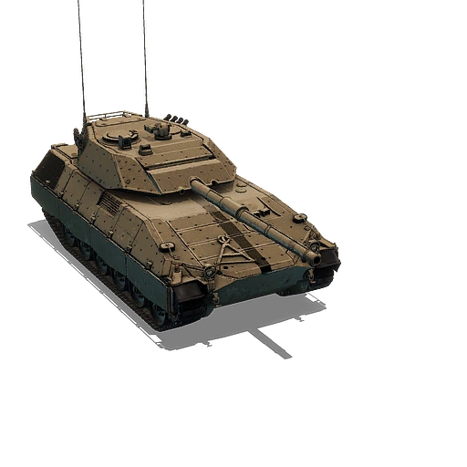

El TAM 2IP (Tanque Argentino Mediano 2IP) es una versión mejorada del tanque medio argentino TAM. El interés del ejército argentino por mantener los tanques medios TAM existentes ha impulsado esfuerzos continuos para mejorar sus capacidades. Este no es el primer intento de modernización; un proyecto anterior, denominado TAM 2C, fracasó por diversas razones, entre ellas, sus elevados costos. El proyecto TAM 2IP involucró a varios subcontratistas. El contratista principal fue la empresa israelí Elbit Systems, y ciertos componentes fueron suministrados por Israel Military Industries (IMI) y Tadiran. La modernización se centró principalmente en mejorar la potencia de fuego, aumentar la protección, optimizar la gestión del motor y realizar otras mejoras menores destinadas a optimizar el tanque en general. Dado que el TAM 2C-A2 parece tener prioridad para las futuras actualizaciones del tanque, el TAM 2IP permanece como prototipo.

El TAM 2C-A2 es un carro de combate que surge del proyecto de modernización del carro TAM (Tanque Argentino Mediano) del Ejército Argentino por parte de la empresa Elbit Systems de Israel. El primer prototipo TAM 2C fue presentado en 2013, y después la versión TAM 2C-A2, con capacidad de combate todo tiempo, mayor precisión y nuevos sensores, fue presentada en 2023. El primer lote fue entregado a la fuerza en 2024.El trabajo es llevado a cabo en la Dirección de Arsenales con asiento en Boulogne Sur Mer.
 Bruno Castro Bengolea, Lucas Formento, Santino Suarez
Bruno Castro Bengolea, Lucas Formento, Santino Suarez